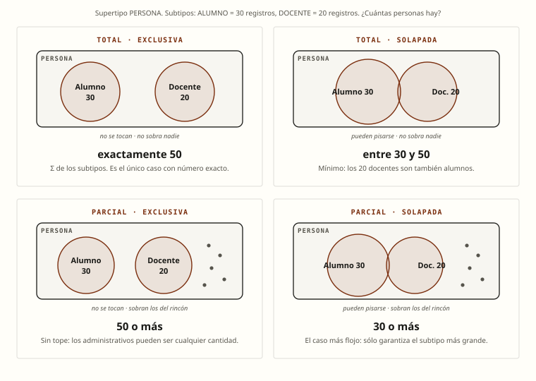

Lección 14 · Unidad 2 · Diseño conceptual
Contar registros del supertipo, contemplando todas las posibilidades
Es la pregunta con la que el docente verifica que entendiste las restricciones de verdad y no memorizaste dos dibujitos. La respuesta casi nunca es un número: es un rango, y cuál sea el rango lo deciden el círculo y el arco.
01Por qué la pregunta tiene sentido
Las restricciones de especialización no son decoración del diagrama: son restricciones de integridad. Dicen qué combinaciones de filas puede y no puede tener la base. Si las entendés, podés contar. Si no, no.
Cada restricción prohíbe una cosa distinta, y sólo una:
| Marca | Qué prohíbe | Efecto sobre la cuenta |
|---|---|---|
| Total (círculo) | Que exista un registro del supertipo fuera de todo subtipo | Pone un techo: el supertipo no puede tener más que la suma |
| Exclusiva (arco) | Que un registro esté en dos subtipos a la vez | Pone un piso: los subtipos no se pisan, así que todos suman |
La frase que ordena todo "Total" te da el máximo. "Exclusiva" te da el mínimo. Si tenés las dos, máximo y mínimo coinciden y la respuesta es un número exacto. Si te falta una, te queda un rango abierto de ese lado.
02Las cuatro cuentas
Trabajemos con un caso concreto. Supertipo Persona, subtipos Alumno con 30 registros y Docente con 20. Pregunta: ¿cuántos registros puede tener Persona?

| Combinación | Respuesta | El razonamiento, en una línea |
|---|---|---|
| Total + exclusiva | exactamente 50 | Nadie afuera y nadie repetido: la suma es la cuenta. |
| Total + solapada | entre 30 y 50 | Nadie afuera pone el techo en 50; el piso es el subtipo más grande, cuando todos los docentes son además alumnos. |
| Parcial + exclusiva | 50 o más | Nadie repetido pone el piso en 50; los que sobran no tienen tope. |
| Parcial + solapada | 30 o más | El caso más flojo: no hay techo, y el piso es sólo el subtipo más grande. |
Las mismas cuatro, en fórmula, para que se te fije el patrón:
| Exclusiva | Solapada | |
|---|---|---|
| Total | |E| = Σ nᵢ |
máx(nᵢ) ≤ |E| ≤ Σ nᵢ |
| Parcial | |E| ≥ Σ nᵢ |
|E| ≥ máx(nᵢ) |
Trampa · el mínimo del caso solapado
El error clásico es poner el mínimo en 0 o en 1 cuando la especialización
es solapada. No: el subtipo más grande tiene 30 filas, y cada una de esas filas
es una persona. No podés tener menos personas que alumnos. El piso siempre es
máx(nᵢ), nunca cero.
Trampa · "contemplando todas las posibilidades" Cuando el docente agrega esa frase te está pidiendo los dos extremos y por qué, no un número. Si escribís sólo "50", aunque el 50 sea alcanzable, la respuesta está incompleta. Escribí siempre: mínimo, máximo, y el escenario que produce cada uno.
03La pregunta al revés
A veces te dan el supertipo y preguntan por los subtipos. Es el mismo razonamiento espejado. Si Persona = 50:
- Total: la suma de los subtipos es al menos 50 (exactamente 50 si además es exclusiva, más de 50 si se solapan porque hay gente contada dos veces).
- Parcial: la suma de los subtipos puede ser cualquier cosa entre 0 y 50 si es exclusiva — con 0 significando que ningún registro se especializó todavía.
Y un corolario que conviene tener a mano: ningún subtipo puede tener más registros que el supertipo, nunca, en ninguna de las cuatro combinaciones. Un subtipo es un subconjunto. Si en tu respuesta el subtipo supera al padre, algo se rompió.
04Ahora contás vos
Papel. Para cada caso escribí mínimo, máximo y el escenario. Después comparás.
- Vehículo → Diesel (12) / Nafta (40). Especialización total y exclusiva. ¿Cuántos vehículos?
- Empleado → Camarero (8) / Cocinero (5) / Lavaplatos (4). Parcial y exclusiva. ¿Cuántos empleados?
- Participante → Productor (3) / Director (2) / Actor (25). Parcial y solapada. ¿Cuántos participantes?
- Jugador → Delantero (6) / Defensa (7) / Arquero (2). Total y solapada. ¿Cuántos jugadores?
- Del caso 4, el DT te dice que el equipo tiene exactamente 15 jugadores. ¿Qué podés afirmar ahora sobre los solapamientos?
Comparar con la corrección
- Exactamente 52. Total + exclusiva es el único caso de número cerrado: 12 + 40, nadie afuera y nadie repetido.
- 17 o más. Exclusiva da el piso: 8 + 5 + 4 = 17, todos distintos. Parcial saca el techo: puede haber empleados que no son ninguna de las tres cosas (un encargado, un cajero), y no sabés cuántos.
- 25 o más. El peor caso para acotar. El piso es máx(3, 2, 25) = 25, que se da si el productor y los directores son además actores. No hay techo porque es parcial. Si pusiste 30, contaste como si fuera exclusiva.
- Entre 7 y 15. Total pone el techo en 6 + 7 + 2 = 15. El piso es máx(6, 7, 2) = 7, que se daría si los 6 delanteros y los 2 arqueros fueran también defensas. Que sea raro en el fútbol no importa: el modelo lo permite, y la pregunta es qué permite el modelo.
- Que no hay ningún solapamiento. 15 es justo el techo, y el techo se alcanza únicamente cuando nadie está en dos subtipos. Es decir: la instancia concreta cumple la restricción de exclusividad aunque el modelo no la exija. Y ojo con la conclusión que NO podés sacar: eso no convierte la especialización en exclusiva. Las restricciones son del esquema, no de la instancia — lo mismo que ya viste con las dependencias funcionales en 0020. Una instancia que hoy no se solapa no prohíbe que mañana se solape.
Subtipos A=40 y B=10, especialización total y solapada. ¿Cuántos registros tiene el supertipo?
¿Cuál de las cuatro combinaciones permite responder con un número exacto?
raw/B Clase 2 Diseño Conceptual Udeci.pptx, slides 25 y 26 —
las justificaciones del docente de cada una de las cuatro combinaciones son
literalmente enunciados de conteo ("sólo hay 2 tipos de fichas", "puede haber más
empleados"). Releelas pensando en cuántas filas permite cada frase.
De apoyo: Elmasri & Navathe, cap. 4, sección 4.3.1 y 4.3.2, donde las restricciones están definidas como condiciones sobre los conjuntos de entidades — que es exactamente de dónde sale la aritmética de esta lección.
Soy tu profe acá. Este es el tipo de pregunta que el docente usa para separar al que entendió del que memorizó. Si querés que te tire diez casos seguidos para cronometrarte, pedímelo en el chat.